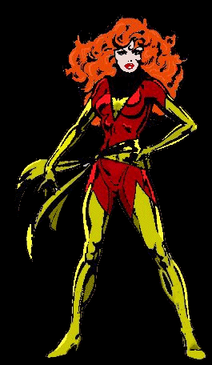
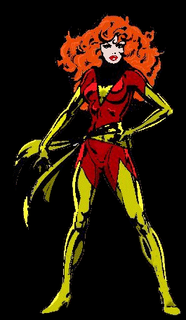

For some reason, before I read it, I firmly expected this installment to be tinted red rather than green. I don’t know why; it must have had something to do with the title.
So, where now with our bookworm girl and her shikomizue?
blowmage
said on
15 Jul 2005 at 16:44
I always saw here as a force to be reckoned with…

why
said on
15 Jul 2005 at 17:02
Better. Thanks, MenTaL.
MenTaLguY
said on
15 Jul 2005 at 17:19
THUMP
Wow. My brain is still reeling from your reification of its momentary perceptual glitches.
It feels so right though!
MenTaLguY
said on
15 Jul 2005 at 17:20
Hmm. You will need to brighten the darker tones a bit though, since red appears so much dimmer than green. Right now, the background figures in the second panel almost totally disappear.
Suggestion: give lower end of the gamma curve for red a little bump, so black stays black, but the dark reds get a little brighter/redder.
Danno
said on
15 Jul 2005 at 18:15
Best of Both Worlds: Asuka Langley?
She’s a bitch though, so maybe not.
RedYoda
said on
15 Jul 2005 at 22:32
MenTaLguY: Much darkness there is in this installment. A different sort of darkness than you suggest lurks here. The dark side Mr. Malsky shows.
murphy
said on
16 Jul 2005 at 05:21
Yeah, that’s another advantage of Ruby over Perl (camel? garlic?) or Python (toxic snake?): Some think that a redhead girl is Ruby’s mascot, not just a cold ruby.
my version of the Ruby-chan (I don’t know who draw the original.)
The last is my picture of her. The student idea fits perfectly, and what she looks like in a bikini is left to men’s phantasy.
We don’t want Ruby hentai, do we?
riffraff
said on
16 Jul 2005 at 06:19
I can clearly see ruby as Lucy from Elfen Lied
. She is red/purple, sweet and at the same time she makes people explode. I won’t telly you which kind of people I am thinking of in the ruby case.
And, where are sexy red guys?
Durante
said on
16 Jul 2005 at 10:41
Interestingly, when I read the “MY RUBY IS UNTOUCHABLE !” exclamation, I also thought of Lucy.
Another Option would be Anita from Read or Die, at least she becomes a bookworm in the end.
Regarding Asuka being the best of both worlds: There arevariousgoodreasons for me to respectfully disagree ;)
Anyway, enough with the anime geeking. Thanks _why for another unsurprisingly insightful installment.
VoR
said on
16 Jul 2005 at 11:24
OK, back to reality guys. Sorry to burst your thought bubble, but don’t you think that sexualizing Ruby is going to scare off potential female Rubyists?
I say we stick with the cold, unwavering, unspeaking, yet very expensive stone as the mascot. It silently projects power and wins in a Rock-Paper-Scissors kind of way: Ruby kills Snake, Ruby crushes Perl into fine dust (OK, sure Snake could swallow Ruby [and some would argue that that is what’s happening] but who do you think comes out in the end?). Now imagine we adopt a female Ruby mascott: Snake kills girl, Girl captivated by Perl bracelet – not good.
VoR II
said on
16 Jul 2005 at 11:32
Besides… the way this episode and accompanied thread of discussion have been going, if my wife were to read this, she’s going to think I’m into some sort of Manga porn.
Mmh…why should female programmers dislike the idea of a female programming language? I don’t see the point.
First of all, the Ruby-chan-idea personalizes Ruby. I don’t know where the idea of a girl came from (in German it is “der Rubin” – male), but my first contact with Ruby was when I found a pink book in a German book shop, turned it around and I saw an anime-like girl! On a programming language book!
What else could I do but buy this book, merging two of my favourite hobbies?
Ruby-chan combines japanity, humaneness, happiness, coolness, redness, sex and – yes – feminity. A Ruby is just red. And how can a mere gemstone be “Programmers best friend”?
By the way, my Ruby from that book holds a Ruby in her hand – this hand presenting a Ruby could also make a good logo.
Scout
said on
17 Jul 2005 at 08:57
Would you really like to see this in your favorite bookshop ?
neoneye
said on
17 Jul 2005 at 13:15
Excellent humor… ;-)
riffraff
said on
18 Jul 2005 at 05:31
do you really don’t? :)
obie
said on
18 Jul 2005 at 07:27
Would you really like to see this in your favorite bookshop ?


_ugly
:o
MenTaLguY
Great imagery.
For some reason, before I read it, I firmly expected this installment to be tinted red rather than green. I don’t know why; it must have had something to do with the title.
So, where now with our bookworm girl and her shikomizue?
blowmage
I always saw here as a force to be reckoned with…

why
Better. Thanks, MenTaL.
MenTaLguY
THUMP
Wow. My brain is still reeling from your reification of its momentary perceptual glitches.
It feels so right though!
MenTaLguY
Hmm. You will need to brighten the darker tones a bit though, since red appears so much dimmer than green. Right now, the background figures in the second panel almost totally disappear.
Suggestion: give lower end of the gamma curve for red a little bump, so black stays black, but the dark reds get a little brighter/redder.
Danno
Best of Both Worlds: Asuka Langley?
She’s a bitch though, so maybe not.
RedYoda
MenTaLguY: Much darkness there is in this installment. A different sort of darkness than you suggest lurks here. The dark side Mr. Malsky shows.
murphy
Yeah, that’s another advantage of Ruby over Perl (camel? garlic?) or Python (toxic snake?): Some think that a redhead girl is Ruby’s mascot, not just a cold ruby.
Let’s see if we can visualize that:
Some anime/manga:- Misty ? Too orange.
- Ranma-Chan ? Too much a Kung-Fu-girl.
Nausicaä ? Too much heroine.
- Mei ? Too young.
- Kitsune ? Maybe that fits the speakers dreams.
And here is Ruby-chan:The last is my picture of her. The student idea fits perfectly, and what she looks like in a bikini is left to men’s phantasy.
We don’t want Ruby hentai, do we?
riffraff
I can clearly see ruby as Lucy from Elfen Lied . She is red/purple, sweet and at the same time she makes people explode. I won’t telly you which kind of people I am thinking of in the ruby case.
And, where are sexy red guys?
Durante
Interestingly, when I read the “MY RUBY IS UNTOUCHABLE !” exclamation, I also thought of Lucy.
Another Option would be Anita from Read or Die, at least she becomes a bookworm in the end.
Regarding Asuka being the best of both worlds: There are various good reasons for me to respectfully disagree ;)
Anyway, enough with the anime geeking. Thanks _why for another unsurprisingly insightful installment.
VoR
OK, back to reality guys. Sorry to burst your thought bubble, but don’t you think that sexualizing Ruby is going to scare off potential female Rubyists?
I say we stick with the cold, unwavering, unspeaking, yet very expensive stone as the mascot. It silently projects power and wins in a Rock-Paper-Scissors kind of way: Ruby kills Snake, Ruby crushes Perl into fine dust (OK, sure Snake could swallow Ruby [and some would argue that that is what’s happening] but who do you think comes out in the end?). Now imagine we adopt a female Ruby mascott: Snake kills girl, Girl captivated by Perl bracelet – not good.
VoR II
Besides… the way this episode and accompanied thread of discussion have been going, if my wife were to read this, she’s going to think I’m into some sort of Manga porn.
k2r
You’re all wrong. Ruby is Enie van de Meiklokjes :-)
Vic
Hmm.. what about ruby as Kenshin?
Please take away the hentai! x.x;
murphy
Mmh…why should female programmers dislike the idea of a female programming language? I don’t see the point.
First of all, the Ruby-chan-idea personalizes Ruby. I don’t know where the idea of a girl came from (in German it is “der Rubin” – male), but my first contact with Ruby was when I found a pink book in a German book shop, turned it around and I saw an anime-like girl! On a programming language book!
What else could I do but buy this book, merging two of my favourite hobbies?
Ruby-chan combines japanity, humaneness, happiness, coolness, redness, sex and – yes – feminity. A Ruby is just red. And how can a mere gemstone be “Programmers best friend”?
By the way, my Ruby from that book holds a Ruby in her hand – this hand presenting a Ruby could also make a good logo.
Scout
Would you really like to see this in your favorite bookshop ?
neoneye
Excellent humor… ;-)
riffraff
do you really don’t? :)
obie
No, but it would rock on a T-shirt!
Aredridel
!
Comments are closed for this entry.